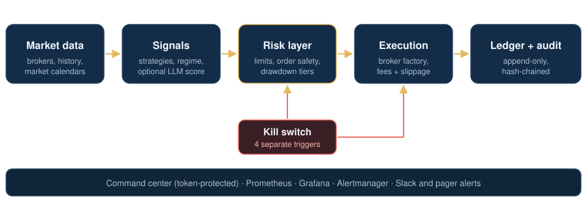
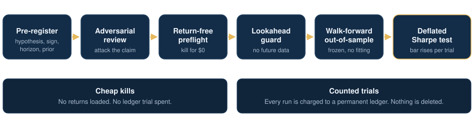
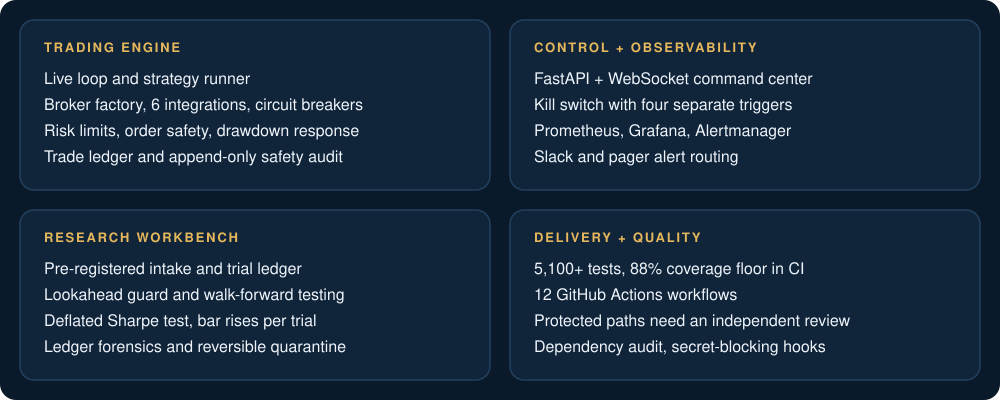

Why we built itFast to build, just as fast to fool yourself
Retail algorithmic trading has four classic failure modes, and AI coding agents make most of them easier to commit. An agent can write a strategy, a backtest and a dashboard in an afternoon. It can also hand you a beautiful equity curve that is pure overfitting.
What it solvesBuilt so nothing reaches capital without earning it
algo_bot is two systems sharing one codebase. The trading path runs strategies across six broker integrations with several independent risk limits, and it defaults to doing nothing: paper or testnet execution unless someone deliberately switches on live trading. The research path is built to decide whether any idea deserves to go live, using a statistical bar that rises with every idea we try.
The design principle across both: when in doubt, the system stops, records why, and waits for a human.
ArchitectureThe trading path

Engineering highlightsSeven decisions, and the failure each one prevents
1. Live trading is opt-in, several times over
- Problem
- One wrong config flag should never put real money at risk.
- Built
- Paper and testnet by default, and no broker places a live order without an explicit setting. On the equities path, going live also takes a same-day confirmation file, an optional typed confirmation and a paper-trading qualification with six pass criteria; any override is recorded.
- Result
- The safe state is the one you get by doing nothing.
2. A kill switch with four separate paths
- Problem
- If the only off switch runs inside the broken part, you can't turn it off.
- Built
- File, environment, automatic (loss limits and safety trips) and a command-center call. Any one of them halts trading, and switches made through the software are logged.
- Result
- There's more than one way to stop it, and none of them depends on a strategy behaving.
3. A bar that rises with every idea tried
- Problem
- Test enough strategies and the best one looks good by luck.
- Built
- A permanent trial ledger and a Deflated Sharpe test. Rejected ideas keep counting, so each new candidate must beat the expected best result of all the noise we've already tried.
- Result
- The test refused the strongest result on record, and we agree with it.
4. A lookahead guard that caught a real leak
- Problem
- Future data leaking into a signal is the classic backtest lie, and it's easy to miss in review.
- Built
- A contract test that re-scores truncated history and demands identical results, run before any evaluation counts.
- Result
- It rejected a first implementation that derived an input from the data it was scoring. The fix made that input independent of the scored data.
5. Forensics where the majority was wrong
- Problem
- The trade ledger mixed 1,392 rows from a retired replay path with 301 live paper trades. "Most common equals normal" flagged the genuine trades as the anomaly.
- Built
- Signature-based cohort scoring and a reversible quarantine keyed on how each row was written, with dry-run, snapshot and a single transaction.
- Result
- Zero misclassified rows, nothing deleted, and an honest baseline recovered.
6. AI agents, with the rules written in code
- Problem
- AI agents write a lot of this codebase. Agents that can merge anything eventually will.
- Built
- Separate roles for implementer, adversarial reviewer and independent merge reviewer; a strict human authorization grammar where anything else means no; and protected paths that can't merge without an independent review posted by a dedicated, main-branch-only identity.
- Result
- Several agents work in one repo, and every protected change needs a second, independent review.
7. An LLM in the loop that has to earn its vote
- Problem
- "Ask an LLM if this trade is good" is easy to build and impossible to trust by default.
- Built
- An optional LLM scoring layer, off by default and log-only: it records an opinion on each signal but blocks nothing until the data shows it predicts outcomes. If it fails, the loop carries on unaffected.
- Result
- As shipped, the score is only recorded. It blocks nothing, and if it fails, trading carries on.
Research rigorHow an idea earns the right to trade

- Pre-registration. Hypothesis, expected sign, one test horizon and a published prior are committed before any data is touched.
- Return-free preflight. Data provenance, overlap with ideas already killed, coverage and a statistical-power check, each with a kill line written in advance.
- Cheap kills first. At least five ideas were stopped before spending a single counted trial.
- One trial means one trial. No quiet sensitivity runs and no re-tries under a new name. A changed idea is a new registration.
Honest resultsSaying no is the product
evaluations certified for capital so far. That includes a candidate that was positive in every out-of-sample fold and about three times stronger than anything before it, and still failed the deflated bar once every earlier trial was counted. In our own written analysis, the bar now sits above every effect we've found but one, and that one still failed. We kept it there rather than lower it after the fact.
The system would rather report nothing than report luck. We make no claims of returns or profitability.
The whole platformSystem map

By the numbersBuilt like production software
Plus lint and format checks, a dependency vulnerability audit that fails on any finding, pre-commit hooks that block private keys and env files, a changelog requirement on every PR, and a daily data-verification job.
What's nextRaise the evidence, not lower the bar
The next step is a prospective-only test: future candidates are judged on data that didn't exist when they were registered, so no past result can be rescued by a rule change. On the engineering side, the priority is fewer features, finished properly: finishing the path from research verdict to paper deployment before adding anything new.
By designWhat this page leaves out
The code is private. This case study describes the architecture and the engineering decisions, not the means to reproduce them. Intentionally omitted:
- strategy logic and parameters
- research ideas, constructions and thresholds
- risk, fee and drawdown settings
- symbols, data sources and vendors
- prompts and model configuration
- infrastructure identifiers and secrets
- performance, P&L and account data